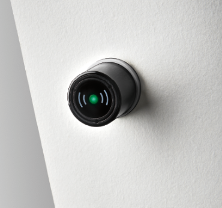
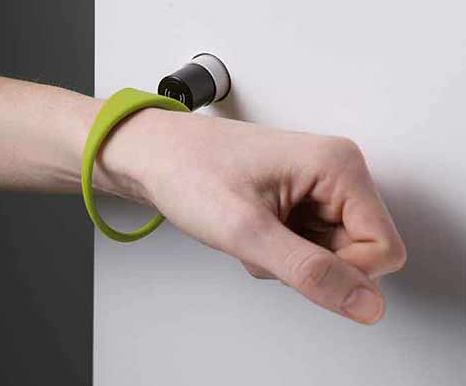

Use your wristband to easily lock and open your locker. The wristband also allows you to check your locker number.
For more information, see
Use your wristband to lock the locker door.
Close the locker door.
When the door is not locked, the lock is pushed out.

Press the wide part of your wristband against the lock to push the lock in.

Check if the door is locked.
When the door is locked, the lock is pushed in.
Use your wristband to open the locker door.
Press the wide part of your wristband against the lock.
The locker door opens, and the round lock is pushed out.
Open the locker door.
Use your wristband to check your locker number.
Tap your wristband against the electronic reader.
The reader displays your locker number.